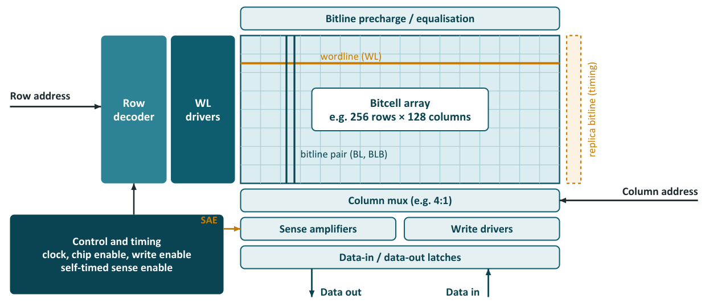
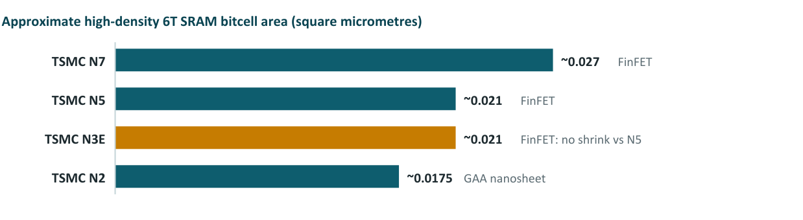

Chapter 15: Designing an SRAM, Process Kits and Process Nodes¶
The earlier chapters treated chips as products. This chapter looks at how a memory chip is designed and made, using the one memory that a student team can realistically take all the way to silicon: a small SRAM block. It walks through the design flow step by step, from specification to tapeout, shows the shortcut offered by the OpenRAM compiler, lists the files handed to the fabricator, and then explains the two ideas that decide what is possible: the process design kit (the factory's rule book) and the process node (and why a DRAM "12 nm" is not a logic "7 nm"). It ends with the trend that makes SRAM a growing problem for processor designers: its cell has almost stopped shrinking.
15.1 Why SRAM, and not DRAM?¶
A 6T SRAM cell is made only of ordinary transistors, so it can be built on any standard CMOS logic process, including the open, academic processes such as SKY130, GF180MCU and IHP SG13G2 that students can actually fabricate on. A DRAM 1T1C cell is different: it needs a capacitor that is very tall and thin (built as a deep trench or a stacked cylinder) and a special low-leakage access transistor. These need a dedicated DRAM process that only memory fabs such as Samsung, SK hynix and Micron run. As a result, designing a DRAM from scratch is not possible on normal or academic shuttle runs, while designing an SRAM is a realistic and very instructive project.
15.2 The design flow, step by step¶
Designing a chip is like building a house with a very strict inspector. The stages are: specification (how big, how fast, how much power: "a three-bedroom house"), architecture (banks, decoders, sense amplifiers, I/O: the floor plan), circuit design (transistor schematics simulated in SPICE: wiring each room), layout (the exact shapes on each layer, in nanometres: the blueprint), verification with DRC and LVS (rule checks and "layout equals schematic": the inspector), tapeout (sending the GDSII file to the factory), fabrication (about three months and hundreds of process steps) and packaging and test (every chip is tested, and bad bits are repaired with spare rows).
Why so much checking?
A mistake found in simulation costs minutes. Found after fabrication, it costs a new set of masks (millions of dollars at advanced nodes) and months. So designers simulate every corner: hot, cold, fast silicon, slow silicon, high and low voltage.
The sections below take the stages for a small SRAM macro (a hard block that is placed in a larger chip) in eleven steps.
Step 1: Specification. Write down what the memory must do before drawing anything: the capacity and organisation (for example 1K × 32: 1024 words of 32 bits, 32 Kbit in total); the number and type of ports (single-port, true dual-port, or one read plus one write port, 1R1W); the target clock frequency and access time; the power budget (energy per access and standby leakage); the supply voltage; and the process with its PDK, for example SKY130, GF180MCU, IHP SG13G2 or a commercial TSMC 65 nm process. Every later decision is checked against this specification.
Step 2: Architecture. Decide how the bits are arranged. A 1K × 32 memory could be 1024 rows of 32 cells, but such a tall, thin array has very long bitlines (slow) and a large decoder. Designers usually fold it: with a 4:1 column multiplexer it becomes 256 rows × 128 columns, and each output bit chooses one of four neighbouring columns (8:1 is also common). Large memories are split into banks to keep wordlines and bitlines short. Timing can come directly from the clock (simple, but every step must allow for the worst case) or from a self-timed replica bitline: a dummy column built to discharge like the slowest real column, which fires the sense amplifiers at just the right moment and automatically tracks process, voltage and temperature.

Example 15.1: Folding a 1K × 32 SRAM
- Capacity: \(1024 \times 32 = 32{,}768\) bits \(= 32\) Kbit. The address has \(\log_2 1024 = 10\) bits.
- Folding with a 4:1 column multiplexer: the array has \(1024/4 = 256\) rows and \(32 \times 4 = 128\) columns, and \(256 \times 128 = 32{,}768\) cells as required.
- The row decoder takes 8 address bits (\(2^8 = 256\) rows); the column multiplexer takes the other 2 bits to choose one of four neighbouring columns for each of the 32 output bits.
- Area estimate on SKY130, using the numbers of Chapter 17: a 6T cell is about 2 µm², and the area per bit including periphery is about 3.3 µm² (about 60 per cent array efficiency). So the block is about \(32{,}768 \times 3.3 = 108{,}000\) µm², or about 0.11 mm².
Step 3: Bitcell design. The 6T cell must be read-stable (a read must not flip it) and writable (a write must flip it). Read stability depends on the cell ratio, which must be comfortably greater than one; writability depends on the pull-up ratio (Section 2.2). Designers measure the static noise margin (SNM) in hold and read, and the write margin, often from butterfly curves. Because transistors vary randomly and a memory holds millions of cells, Monte Carlo simulation over many random samples checks that the margins hold far out into the statistical tail. If the foundry offers a pushed-rule bitcell, a cell drawn with special tighter rules that the foundry has qualified, use it: it is much smaller than anything that can be drawn with normal rules.
Step 4: Peripheral circuits. Design the circuits around the array: a predecoder and decoder that turn the row address into one active row; wordline drivers strong enough to switch a long, heavily loaded wordline quickly; bitline precharge and equalisation transistors that set both bitlines to the same voltage before each access; a latch-type sense amplifier that resolves a small bitline difference into a full logic level when sense-enable fires; write drivers that pull one bitline low; the column multiplexer; and the control logic with its replica timing path.
Step 5: SPICE simulation. Simulate the critical path (address input, decoder, wordline, bitline discharge, sense amplifier and output) with a SPICE circuit simulator: ngspice or Xyce (open source), HSPICE or Spectre (commercial). Check read, write and hold at every PVT corner (process, voltage, temperature): process corners TT, FF, SS, FS and SF (typical, fast or slow NMOS and PMOS), supply ±10 per cent, and temperature from −40 to 125 °C. Measure access time, minimum cycle time, energy per read and write, and leakage. Run Monte Carlo on the sense amplifier: its input offset must be safely smaller than the bitline difference that has developed when sense-enable fires.
Step 6: Layout. Draw the physical shapes in a layout editor: Magic or KLayout (open source) or Cadence Virtuoso (commercial). Start with the leaf cells (bitcell, sense amplifier, drivers) and tile them. The periphery must be pitch-matched: each sense amplifier or wordline driver must fit exactly into the width or height of one or a few bitcells so that the blocks line up. Add a power grid, well taps (which tie the wells to the supply and prevent latch-up), guard rings around sensitive circuits, and dummy rows and columns at the array edge so that the outermost real cells see the same surroundings as the inner ones.
Step 7: Physical verification. DRC (design rule check) confirms that every shape obeys the foundry's width, spacing and enclosure rules; the result must be clean or covered by foundry-approved waivers. LVS (layout versus schematic) extracts a circuit from the layout and proves that it matches the schematic. Antenna, ERC (electrical rule check) and density checks complete the set. Tools: Magic, KLayout and Netgen (open source); Siemens Calibre or Cadence Pegasus (commercial).
Step 8: Parasitic extraction and post-layout simulation. Real wires have resistance and capacitance. PEX (parasitic extraction) adds them to the netlist; long bitlines and wordlines in particular become slower. Re-simulate the critical paths with parasitics, then fix and iterate: resize drivers, adjust the replica timing or change the floorplan.
Step 9: Characterisation and views. Digital tools cannot simulate the whole SRAM at transistor level, so abstract views are generated: a Liberty .lib file with timing and power tables for each corner, a LEF abstract (outline, pin positions and blocked metal) for place-and-route tools, and a Verilog behavioural model for logic simulation.
Step 10: Chip integration. Place the macro in a full chip: a pad ring with ESD (electrostatic discharge) protection on every pin, power and ground pads, a seal ring around the die edge, and usually a BIST (built-in self-test) engine that writes and reads test patterns. Then run full-chip DRC and LVS, add metal and polysilicon fill to meet density rules, and complete the signoff checklist.
Step 11: Tapeout. Send the final layout to the foundry, or to a multi-project wafer (MPW) shuttle in which many designs share one mask set and wafer run to split the cost. Academic routes include Europractice, MOSIS and IHP's own shuttles. Chips typically come back some months later for packaging and lab testing.
15.3 The shortcut: OpenRAM¶
OpenRAM is an open-source SRAM compiler that automates steps 2 to 9. You give it the word size, the number of words and the number of ports, and it generates the netlist, layout, .lib, .lef and Verilog model and runs DRC and LVS. It supports SKY130, GF180MCU and the predictive FreePDK45, among others. A good learning plan is to generate a memory with OpenRAM first, then study, simulate and modify the circuits it produced.
A student route through the open tools has five steps: simulate a 6T cell (Xschem and ngspice); generate an SRAM (the OpenRAM compiler); check the layout (Magic or KLayout, with Netgen); build the chip (LibreLane, the successor of OpenLane); and tape out to a shuttle, then test the silicon.
| Stage | Open-source option |
|---|---|
| Process design kit (PDK) | SKY130, GF180MCU, IHP SG13G2 |
| Schematic capture | Xschem |
| Circuit simulation | ngspice, Xyce |
| Layout | Magic, KLayout |
| DRC / LVS | Magic, KLayout, Netgen |
| SRAM compiler | OpenRAM |
| Full chip (RTL to GDS) | OpenLane / LibreLane |
15.4 Files given to the fabricator¶
At tapeout the foundry or shuttle operator needs a small, well-defined set of files. The layout file is the real product; the rest proves that it is correct and tells the fab how to handle it.
| File | Purpose | Required? |
|---|---|---|
| GDSII (.gds) or OASIS (.oas) | Final layout with all mask layers; the main deliverable | Mandatory |
| Layer map / mask layer list | Maps GDS layer numbers to foundry mask layers | Usually |
| DRC report (clean) and waiver list | Proves compliance with the design rules | Usually |
| LVS report | Shows the layout matches the netlist | Often requested |
| Tapeout form / checklist | Die size, top-cell name, process options, metal stack, number of dies, shuttle ID | Mandatory |
| Density / fill report | Metal and poly density rules met (some foundries add fill themselves) | Usually |
| Seal ring and scribe information | Die boundary for dicing | Usually built into the GDS |
| Bonding diagram / pad list | For the packaging house | If packaging is ordered |
| Netlist (CDL/SPICE) | Some foundries run their own LVS | Sometimes |
Kept in-house, not sent to the fab: schematics; SPICE netlists and simulation results; the .lib, .lef and Verilog models; and the test plan and test vectors used when the chips come back.
15.5 The factory's rule book: the PDK¶
A PDK (process design kit) is the rulebook and the set of models for one fab's process: it tells designers and tools what can be drawn and how the resulting devices will behave. Commercial PDKs (TSMC, Samsung) are secret and need an agreement. The open PDKs SkyWater SKY130, GlobalFoundries GF180 and IHP SG13G2 are free on GitHub. Because a PDK is derived from measurements of real wafers, you cannot create a PDK for TSMC or Samsung without their process data.
| Component | What it is | Formats / tools |
|---|---|---|
| Device models | SPICE models with corners and Monte Carlo statistics | BSIM4, BSIM-CMG, BSIM-BULK; .lib / .scs files |
| Design rule manual | Human-readable rules: widths, spacings, enclosures | |
| DRC deck | Machine-readable design rules | Calibre SVRF, KLayout DRC, Magic techfile |
| LVS deck | Device recognition and netlist comparison | Calibre, Netgen, KLayout LVS |
| PEX deck | Parasitic extraction rules | StarRC ITF / nxtgrd, Quantus ICT / qrcTechFile, Magic extraction |
| Techfile and layer map | Layer definitions and display | Virtuoso techfile, KLayout .lyp / .lyt, LEF technology |
| PCells | Parameterised device layouts | SKILL, PyCell, KLayout Python, gdsfactory |
| Symbols | Schematic symbols for each device | Virtuoso, Xschem |
| Standard-cell library | Logic gates for digital design | GDS, LEF, Liberty .lib, Verilog |
| I/O and ESD library | Pads and protection | GDS, LEF, .lib |
| Reliability rules | Electromigration limits, ageing, ESD | Documents and decks |
| DFM rules | Fill and lithography-hotspot rules | Decks |
| Memory compilers (optional) | Generate SRAM blocks | Compiler software |
How a PDK is built. There are nine steps. (1) Define the process: choose the masks, layer thicknesses, doping and gate oxide, and draft the first design rules from what the lithography and etch tools can reliably achieve. (2) Simulate with TCAD (technology computer-aided design), which gives first estimates of device behaviour before any silicon exists. (3) Design test chips: transistors of many widths and lengths, resistors, capacitors, diodes, ring oscillators, contact and via chains, yield structures, and structures that test each design rule. (4) Measure wafers with a probe station and parameter analyser (I–V and C–V curves, sheet resistance and leakage across many wafers and lots). (5) Extract models by fitting BSIM parameters to the measurements and creating corner and statistical models. (6) Write the DRC, LVS and PEX decks. (7) Build the design libraries: PCells, symbols and standard cells, characterised for timing and power. (8) Qualify and correlate with a test design (ring oscillators, an SRAM, a small CPU) and check that silicon matches simulation. (9) Release, document, version and maintain.
| Kind of PDK | Team | Time |
|---|---|---|
| Academic or older process (1 µm–180 nm) | 2–10 people | 1–2 years |
| Predictive / educational (ASAP7, FreePDK) | 3–10 researchers | 1–2 years |
| Commercial advanced node | 100–300+ engineers | Years, with continuous updates |
| PDK | Type | Node | Manufacturable? |
|---|---|---|---|
| SKY130 (SkyWater) | Real, open | 130 nm | Yes |
| GF180MCU (GlobalFoundries) | Real, open | 180 nm | Yes |
| IHP SG13G2 | Real, open, SiGe BiCMOS | 130 nm | Yes, via IHP shuttles |
| ASAP7 (ASU and Arm) | Predictive | 7 nm FinFET | No |
| FreePDK45 / FreePDK15 (NC State) | Predictive | 45 / 15 nm | No |
| PTM models (ASU) | Predictive models only | 130 nm down to 7 nm | No |
| LibreSilicon | Community, experimental | ~1 µm | Experimental |
What does this mean for RAM projects? No public DRAM PDK exists, so DRAM cell design can only be studied, not fabricated, outside the memory companies. SRAM is fully possible on SKY130, GF180MCU and IHP SG13G2, and OpenRAM supports SKY130 and GF180MCU. ASAP7 lets you simulate a 7 nm FinFET SRAM cell and see modern scaling effects. Building a small PDK for a college or institute nanofab (for example a 1 to 2 µm CMOS process) makes an excellent final-year or research project.
15.6 What "nm" means for memory¶
Logic chips are sold as "7 nm", "3 nm" or "2 nm". DRAM uses a completely different naming system, and the numbers cannot be compared directly.
DRAM node names. Since about 2016 DRAM makers have named their processes as generations of a "10 nm class": 1x, 1y, 1z, then the Greek letters 1α, 1β, 1γ. The number loosely tracks the half-pitch of the memory array, half the distance between repeated lines such as wordlines, which is a real physical dimension. EUV (extreme ultraviolet) lithography, which prints the finest patterns in one exposure, entered DRAM production at 1z/1α.
| Node | Approx. half-pitch | Mass production | EUV used? |
|---|---|---|---|
| 1x | ~18–19 nm | ~2016 | No |
| 1y | ~17 nm | ~2018 | No |
| 1z | ~15–16 nm | ~2019–20 | Samsung: 1 layer |
| 1α (1a) | ~14 nm | ~2021 | Samsung and SK hynix yes; Micron no |
| 1β (1b) | ~12–13 nm | ~2022–23 | Samsung and SK hynix yes; Micron no |
| 1γ (1c) | ~11–12 nm | ~2024–25 | Yes (Micron's first EUV node) |
| 1δ / 0a | ~10 nm and below | ~2026–27+ | Yes, more layers |
| 3D DRAM / 4F² vertical-channel cells | Below 10 nm equivalent | ~2028–2030+ | In research and development |
Feature sizes are approximate: vendors do not publish exact dimensions. Micron uses Greek letters (1α, 1β, 1γ), while Samsung and SK hynix use 1a, 1b, 1c; Samsung also markets its 1b node as "12 nm-class". 4F² refers to a cell area of four times the square of the feature size, smaller than today's 6F² cells.
Why DRAM "12 nm" is not logic "7 nm".
| Aspect | DRAM "12 nm-class" | Logic "7 nm" (e.g. TSMC N7) |
|---|---|---|
| What the number means | Roughly a real half-pitch of the memory array | A marketing name; actual gate pitch is about 57 nm and tightest metal pitch about 40 nm |
| Optimised for | Density, ultra-low leakage, very tall capacitors | Transistor speed and drive current |
| Array transistor | Buried-channel array transistor (buried wordline) | FinFET, now gate-all-around (GAA) nanosheets |
| Hardest structure | Storage capacitor with aspect ratio above 50:1 | Transistor and dense metal wiring |
A DRAM cell must hold a tiny charge for around 64 ms between refreshes, so its access transistor must leak almost nothing and its capacitor must be as large as possible in a tiny footprint. That leads to capacitors more than fifty times taller than they are wide, and to buried wordline transistors (BCAT) whose gate sits in a trench below the silicon surface to give a long effective channel. Logic processes make the opposite trade: fast, leaky transistors and many layers of wiring. This is why DRAM and logic are made in different fabs, and why their "nm" numbers measure different things.
Which node each RAM type uses (2025 to 2026).
| RAM type | Typical process node |
|---|---|
| DDR4 | 1x / 1y / 1z |
| DDR5 | 1α, 1β, now 1γ / 1c |
| LPDDR5X | 1β, 1γ / 1c |
| LPDDR6 | 1γ / 1c |
| GDDR6 | 1y–1α |
| GDDR7 | 1β (some 1γ) |
| HBM3E (DRAM dies) | 1β |
| HBM4 (DRAM dies) | 1β / 1c |
| HBM4 (base die) | A logic process (for example TSMC 12 nm, 5 nm or 3 nm, or Samsung 4 nm), the first time HBM uses a logic node for its base die |
| On-chip SRAM | Same node as the processor (5 nm, 3 nm, 2 nm, Intel 18A) |
| Standalone SRAM | 28–90 nm |
| PSRAM | ~25–65 nm |
| RLDRAM | Older DRAM nodes |
| Embedded MRAM | 28 / 22 / 16 / 12 nm, moving to 14 / 8 nm |
| Standalone MRAM | 28–40 nm |
| FeRAM | ~130 nm |
| ReRAM (embedded) | 40 / 28 / 22 nm |
| LPDDR6 controller + PHY (inside the SoC) | 3 nm / 2 nm |
SRAM scaling has stalled. For decades each new logic node shrank the SRAM bitcell substantially. That has slowed sharply: the high-density 6T cell barely shrank from TSMC N5 to N3E, and gate-all-around transistors at N2 brought only a modest gain (Figure 15.2, approximate published figures). Because caches are a large share of a modern processor's area, this is a serious problem. One response is to build SRAM on a separate, cheaper die and stack it on the processor, as AMD does with 3D V-Cache.

Example 15.2: How much did the SRAM cell really shrink?
- N7 to N5: \(0.027 \to 0.021\) µm², an area ratio of \(0.021/0.027 = 0.78\), a 22 per cent reduction.
- N5 to N3E: \(0.021 \to 0.021\), ratio 1.0: no shrink at all.
- N3E to N2: \(0.021 \to 0.0175\), ratio 0.83, a 17 per cent reduction.
- N7 to N2 overall: \(0.0175/0.027 = 0.65\), so the cell is 35 per cent smaller after three node steps, about 1.5 times denser.
- For comparison, the SKY130 6T cell of about 2 µm² is \(2/0.027 = 74\) times larger than the N7 cell, and a DRAM cell of about 0.001 µm² is 27 times smaller than the N7 SRAM cell.
15.7 Summary¶
- SRAM is the only memory a student team can take to silicon: it needs only ordinary logic transistors, while DRAM needs a dedicated process with very tall capacitors that only memory fabs run.
- The SRAM flow has eleven steps: specification, architecture, bitcell, periphery, SPICE simulation, layout, physical verification, extraction, characterisation, integration and tapeout. OpenRAM automates steps 2 to 9.
- The PDK holds device models, design rules, rule decks and cell libraries; the open PDKs are SKY130 (130 nm), GF180MCU (180 nm) and IHP SG13G2 (130 nm SiGe BiCMOS).
- DRAM node names (1α, 1β, 1γ) track a real half-pitch of the array; logic "nm" names are marketing. DRAM and logic differ in what they optimise (leakage and tall capacitors against speed).
- The 6T SRAM cell has almost stopped shrinking: no shrink from N5 to N3E, 17 per cent from N3E to N2.
15.8 Exercises¶
Exercise 15.1. A 2K × 16 SRAM is folded with an 8:1 column multiplexer. How many address bits, rows and columns does it have, and how many bits go to the row decoder?
Answer
Words: 2048, so 11 address bits. Array: rows \(= 2048/8 = 256\), columns \(= 16 \times 8 = 128\) (\(256 \times 128 = 32{,}768\) cells, 32 Kbit). Row decoder: 8 bits; the column multiplexer takes the other 3 bits.
Exercise 15.2. Using 3.3 µm² per bit on SKY130, estimate the area of a 4 KB (32 Kbit) SRAM macro, and how many such macros fit into a 10 mm² shuttle slot?
Answer
\(4\ \text{KB} = 32{,}768\) bits. Area \(= 32{,}768 \times 3.3 = 108{,}000\) µm² \(= 0.108\) mm². In 10 mm²: \(10/0.108 \approx 92\) macros, ignoring pad ring, routing and test logic.
Exercise 15.3. Why does the SRAM flow use a replica bitline for timing?
Answer
The replica bitline is a dummy column that discharges like the slowest real column, so it fires the sense amplifiers at just the right moment. Because it is built from the same devices, it tracks process, voltage and temperature automatically, without allowing a fixed worst-case delay at every step.
Exercise 15.4. Match each file to the stage that needs it: (a) Gerber files; (b) GDSII; (c) ATE test program; (d) bonding diagram. Stages: PCB fab, DRAM fab, OSAT, tester.
Answer
(a) PCB fab and assembly. (b) The DRAM fab (silicon). (c) The tester. (d) The OSAT (packaging).
Exercise 15.5. A student wants to design a 4 Gb DRAM chip on a SKY130 shuttle. Explain why this cannot work, using the cell and the process.
Answer
A DRAM 1T1C cell needs a very tall, thin capacitor (aspect ratio above 50:1) and a low-leakage access transistor. The open processes have no deep-capacitor or buried-wordline technology; only memory fabs have such a process, and no open DRAM PDK exists. The metal-insulator-metal capacitors available on open PDKs are far too large. Even with SRAM in place of DRAM, 4 Gb would need about 115,000 mm² at SKY130, about 130 times the largest chip a factory can print (Chapter 17).
Exercise 15.6 (Assignment 13: generate and inspect a real SRAM). Configure OpenRAM for 256 words × 32 bits on SKY130. Open the GDS in KLayout and find the bitcell array, the decoders and the sense amplifiers. Run DRC (Magic) and LVS (Netgen) and read the .lib timing file.
Answer
A configuration file is as short as word_size = 32, num_words = 256, tech_name = "sky130", run with python3 sram_compiler.py myconfig.py from the OpenRAM checkout (start from an example configuration shipped with OpenRAM and change only the size). Success means the GDS opens, LVS reports a match, and you can name each region of the layout. Deliver screenshots of each block, the DRC and LVS results and the macro area. The block is 1 KB, in the range of 1 KB to a few hundred KB that suits a test chip.